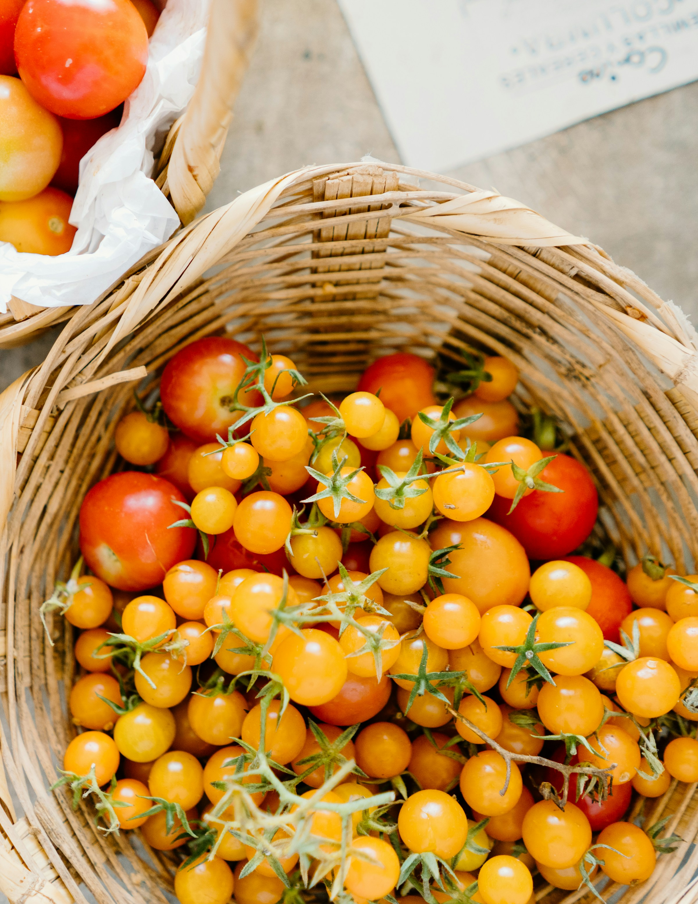
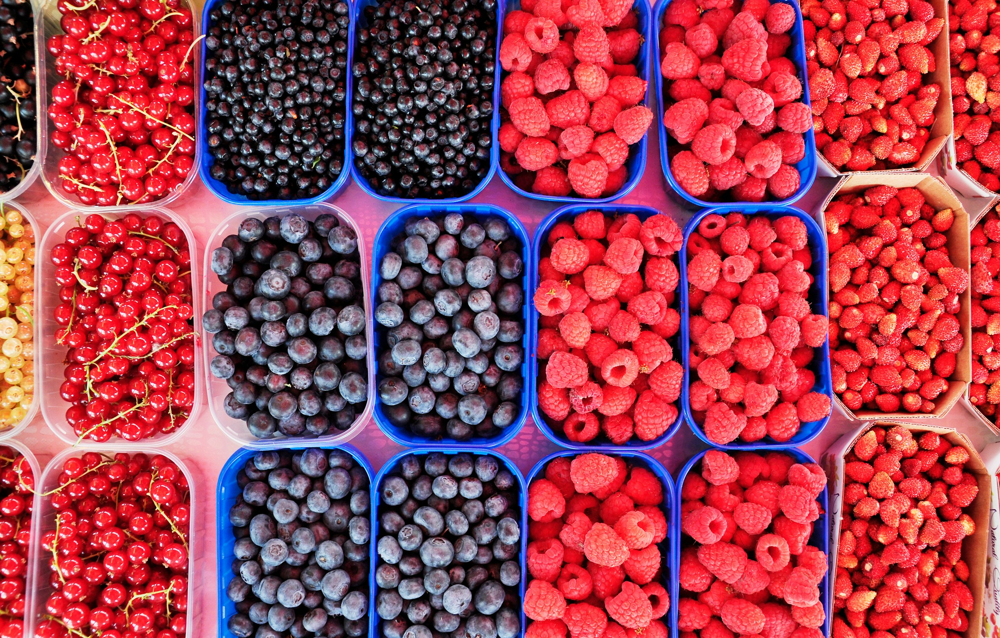
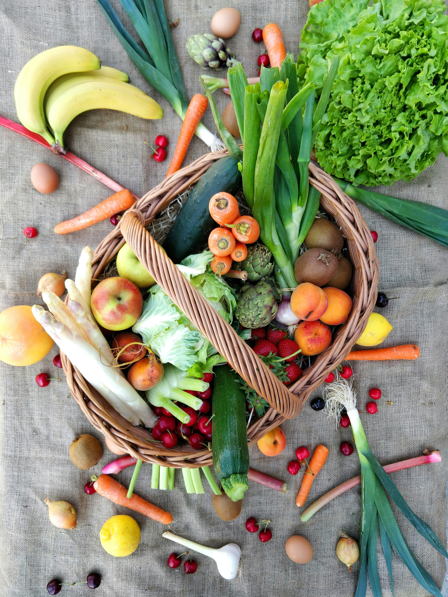
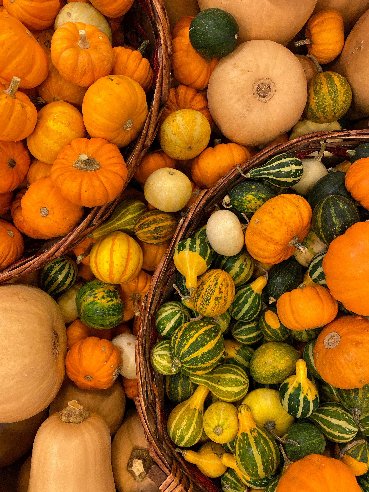
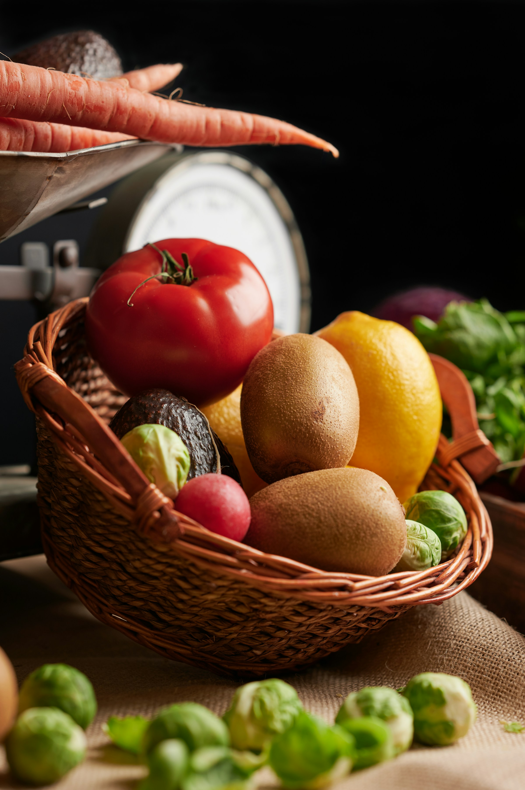

Qu'est-ce qu'une AMAP ?
LES AMAP SONT LE SEUL SYSTÈME ASSURANT DES LIVRAISONS ALIMENTAIRES SANS INTERMÉDIAIRE (ET DONC SANS MARGE).
DANS CE PARTENARIAT, CHACUN·E S’ENGAGE :
Les paysan·nes s’engagent à livrer régulièrement des produits sains, frais et locaux, produits sur leur ferme. Les citoyen·nes (appelé·es amapien·nes) s’engagent à payer à l’avance un certain nombre de paniers, sur le principe d’un abonnement. ET TOUT LE MONDE S’Y RETROUVE !
À TRAVERS DES PANIERS LIVRÉS RÉGULIÈREMENT, CE SYSTÈME PERMET :
Aux paysan·nes d’être rémunérés équitablement justement, et d’avoir une visibilité sur leur finance grâce à l’anticipation des ventes. aux amapien·nes d’acheter à un prix équitable des produits de qualité, en étant informés de leur origine et de la façon dont ils ont été produits. à tous et toutes de se rencontrer, d’échanger, de mutualiser des savoirs et pratiques, tout comme des moments partagés et conviviaux.
UN CONTRAT
Chaque amapien·ne signe un contrat avec un·e paysan·ne, qui les engagent tous les deux sur une certaine période (6 mois, 1 an…). Cet engagement se traduit par le pré-paiement de l’ensemble de la période sur laquelle court le contrat. Le règlement peut être échelonné en plusieurs paiements.
Comme il n’y a pas d’intermédiaire commercial entre le groupe de citoyen·nes et les paysan·nes. Cela permet aux uns d’avoir accès à des produits frais, sains et de saison, et aux autres d’être justement équitablement rémunérés.
UNE LIVRAISON RÉGULIÈRE ET CONVIVIALE
Chaque semaine, pendant une à deux heures, tous·tes les amapien·nes retrouvent les paysan·nes. sur le lieu de livraison des paniers.
La fréquence des livraisons dépend des produits: si chaque semaine les légumes sont livrés, les produits de plus grande conservation peuvent être livrés mensuellement ou par quinzaine, voire pour des produits moins fréquents tous les deux mois ou seulement l’hiver (les agrumes).
La livraison, est un temps d’échange. Comprendre comment se passe le travail sur la ferme, faire connaissance avec le ou la paysan·ne, et avec les amapien.nes, échanger entre voisins: cela permet de faire vivre son territoire ! C’est un moment idéal pour construire des choses ensemble et donner du sens à la solidarité.
UN ENGAGEMENT AU-DELÀ DU PANIER
Sans intermédiaire, cela veut aussi dire que le fonctionnement de l’AMAP repose sur une bonne organisation entre citoyen·nes et paysan·nes, et un certain investissement des bénévoles amapien.nes. Le partenariat AMAP se base sur une confiance réciproque, qui passe par la transparence et une bonne communication entre le groupe AMAP et le·a paysan·ne.
Le partenariat AMAP, au-delà d’un panier pour les uns et d’un débouché commercial pour les autres, est un moyen concret de préserver et développer une agriculture locale, écologique, et socialement équitable, comme le précise la charte des AMAP.
Pour assurer la pérennité des fermes, la stabilité financière est indispensable. En assurant l’achat de la production à l’avance, le partenariat AMAP est un soutien concret. Les paysan·nes ont ainsi une bonne visibilité sur leurs finances. En payant un prix de panier pour l’année, les amapien·nes assurent aux paysan·nes un revenu stable, et non (ou en tout cas moins) soumis aux fluctuations des prix des marchés.
L’AMAP, c’est aussi comprendre les problématiques auxquelles sont confrontés les paysan·nes, et accepter qu’en cas d’aléas de production (sécheresse, tempête, maladie des plantes ou des animaux d’élevages… ), les paniers soient un peu moins remplis.
